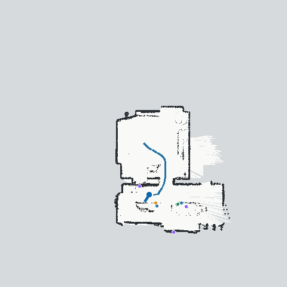
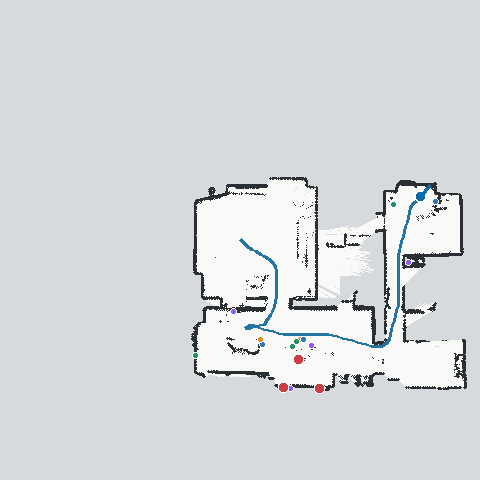
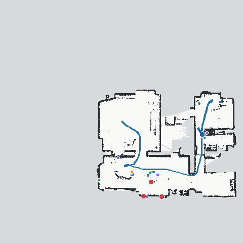
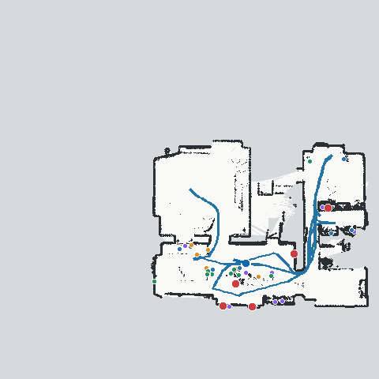
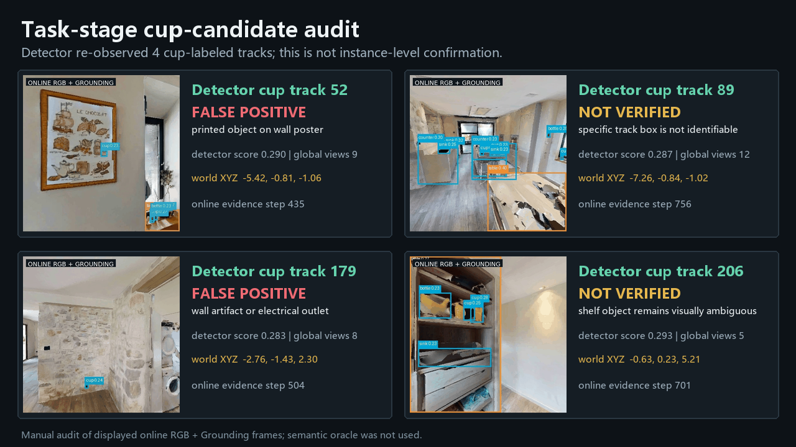

同步执行回放
回放速度：25× normal，完整回放约 30.7 秒；
“正常速度”按每个离散动作 1.0 秒定义。
这只是回放倍率，真实模型耗时见上方闭环延迟。
GIF 版本：

四阶段可复用记忆检查点
纠偏前自主记忆

autonomous_before_guidance
一次纠偏后

after_guidance
任务注入时

task_start
任务执行结束

final
四张图分别来自同一 episode 的在线状态，不是用最终地图倒推生成。
因果与泄漏审计
✓ 当前/历史帧才可参与当前决策：true
✓ semantic sensor：False
✓ semantic scene read：False
✓ 预制路线：False
✓ 任务在 MemoryReady 后才可见：true
导航目标来源：online observed BEV frontier or online grounded semantic memory
navmesh 用途：complete-scene navmesh global shortest-path query for the current online target; privileged geometric execution
几何输入：Habitat depth + exact pose。
策略分布
动作：{"turn_left": 266, "turn_right": 235, "move_forward": 238, "look_down": 11, "look_up": 11, "wait": 10}
兴趣模式：{"initial_panorama_scan": 24, "frontier_exploration": 115, "coverage_viewpoint_scan": 89, "stuck_recovery": 6, "guided_correction_navigation": 78, "guided_correction_scan": 50, "coverage_completion_scan": 1, "task_injection_and_api_planning": 10, "cup_candidate_approach": 93, "cup_candidate_scan": 5, "semantic_target_scan": 131, "semantic_interest": 164, "semantic_surface_scan": 4, "unreachable_target_recovery": 1}
停止原因：task_execution_exhausted
人工纠偏：{"status": "completed", "target_position_xyz": [0.05900000035762787, -1.5928866863250732, 8.88599967956543], "start_step": 120, "complete_step": 248, "explored_cells_before": 30210, "explored_cells_after": 43496, "explored_cell_gain": 13286}
已探索栅格：46,697
覆盖确认：0；最终阶段：task_execution
运行时 API 任务规划
模型：qwen3-max；
模式：api；
注入 step：360。
{
"task_plan": [
{
"step": 1,
"intent": "inspect_candidate",
"target_id": "track_89"
},
{
"step": 2,
"intent": "inspect_candidate",
"target_id": "track_52"
},
{
"step": 3,
"intent": "inspect_candidate",
"target_id": "track_46"
},
{
"step": 4,
"intent": "inspect_candidate",
"target_id": "track_232"
},
{
"step": 5,
"intent": "inspect_candidate",
"target_id": "track_254"
},
{
"step": 6,
"intent": "inspect_candidate",
"target_id": "track_250"
},
{
"step": 7,
"intent": "inspect_candidate",
"target_id": "track_260"
},
{
"step": 8,
"intent": "inspect_candidate",
"target_id": "track_269"
},
{
"step": 9,
"intent": "inspect_candidate",
"target_id": "track_98"
}
],
"ordered_candidate_ids": [
"track_89",
"track_52",
"track_46",
"track_232",
"track_254",
"track_250",
"track_260",
"track_269",
"track_98"
],
"stop_probability": 0.0,
"stop_condition": "all candidates inspected",
"reason": "target objects prioritized before support surfaces per constraints"
}
三态证据累计
positive observation：
2644
not observable：
211453
expected-visible miss：
4009
Planner 只决定候选顺序；每次到达后的新观测仍会更新 confidence、freshness 和 negative evidence。
任务阶段再次检测到的 cup-labeled tracks
| Track | 类别 | 置信度 | 独立视角 | 世界坐标 XYZ |
|---|---|---|---|---|
| 52 | cup | 0.290 | 9 | -5.42, -0.81, -1.06 |
| 89 | cup | 0.287 | 12 | -7.26, -0.84, -1.02 |
| 179 | cup | 0.283 | 8 | -2.76, -1.43, 2.30 |
| 206 | cup | 0.293 | 5 | -0.63, 0.23, 5.21 |
Task-result visual audit
以下四个画面取自任务执行阶段的在线 RGB + Grounding 证据。它们证明检测器再次输出了 cup 标签，但人工复核发现两条明确误检、两条无法确认，因此不能作为实例级寻杯成功证据。
